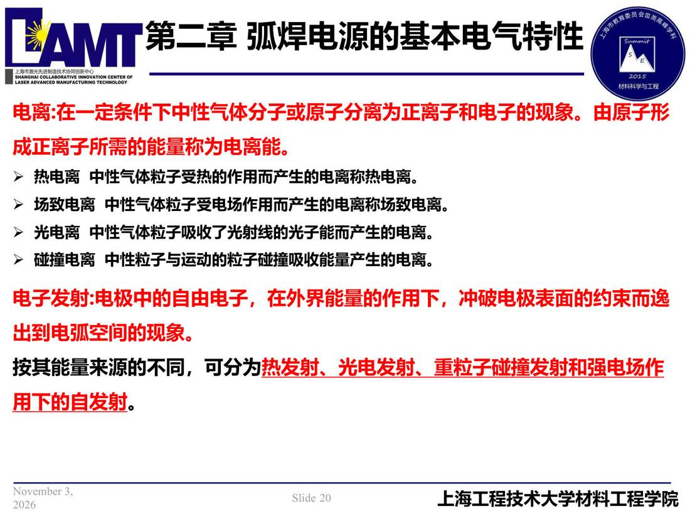

02 第2章 基本电气特性/p020 电离 在一定条件下中性气体分子或原子分离为正离子和电子的现象。由原子形
p020 电离 在一定条件下中性气体分子或原子分离为正离子和电子的现象。由原子形
📄 原文：📄 弧焊电源 课件（PDF 第 20 页）（幻灯片 20/273；PDF 第 20 页）
电离 在一定条件下中性气体分子或原子分离为正离子和电子的现象。由原子形

讲义原文
电离:在一定条件下中性气体分子或原子分离为正离子和电子的现象。由原子形
成正离子所需的能量称为电离能。
- 热电离 中性气体粒子受热的作用而产生的电离称热电离。
- 场致电离 中性气体粒子受电场作用而产生的电离称场致电离。
- 光电离 中性气体粒子吸收了光射线的光子能而产生的电离。
- 碰撞电离 中性粒子与运动的粒子碰撞吸收能量产生的电离。 电子发射:电极中的自由电子，在外界能量的作用下，冲破电极表面的约束而逸出到电弧空间的现象。按其能量来源的不同，可分为 热发射、光电发射、重粒子碰撞发射和强电场作用下的自发射。
本页标红（老师强调）
- 电离:在一定条件下中性气体分子或原子分离为正离子和电子的现象。由原子形
- 成正离子所需的能量称为电离能
- 电子发射:电极中的自由电子，在外界能量的作用下，冲破电极表面的约束而逸
- 出到电弧空间的现象
- 热发射、光电发射、重粒子碰撞发射和强电场作
- 用下的自发射